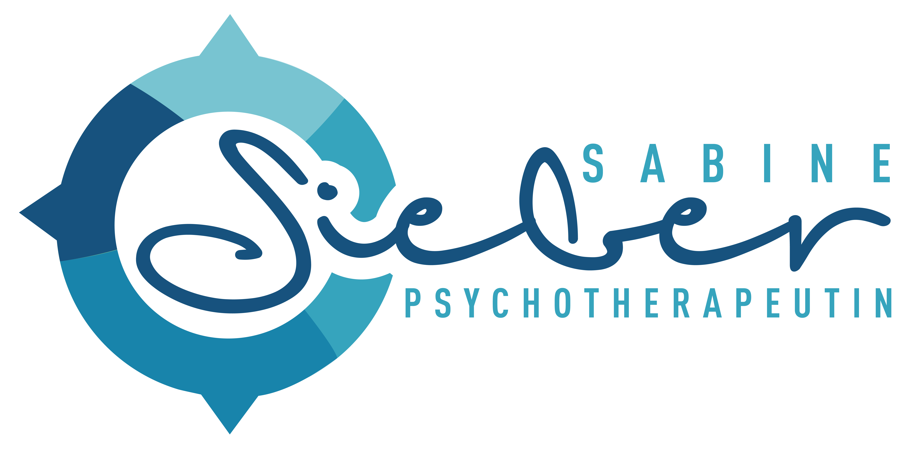

Sabine Sieber
Psychologin M.Sc.
Psychologische Psychotherapeutin
Verhaltenstherapie für Erwachsene ∙ Alle Kassen
Praxis Donauwörth
Offizial-Schmid-Straße 386609 Donauwörth
Behandlungstermine nach telefonischer Vereinbarung
Telefonische Sprechzeiten Montag bis Donnerstag 11:30 Uhr–11:55 Uhr
Telefon ∙ 0906 12026405 (nur Donauwörth)
Praxis Pfaffenhofen (ab 15.1.2025)
Münchener Straße 12 (Insel 1)85276 Pfaffenhofen (Ilm)
Behandlungstermine nach telefonischer Vereinbarung
Telefonische Sprechzeiten Freitag 16:00 Uhr–17:40 Uhr
Telefon ∙ 0176 75475018 (nur Pfaffenhofen)
Über mich
2010–2015 Studium der Psychologie B.Sc. und M.Sc. an den Universitäten Würzburg und LMU München ∙ Auslandssemester Boğaziçi Üniversitesi Istanbul ∙ 2015–2019 Weiterbildung zur Psychologischen Psychotherapeutin am Centrum für integrative Psychotherapie CIP MÜNCHEN ∙ Approbation im Herbst 2019 ∙ 2019–2022 Psychotherapeutische Tätigkeit in verschiedenen Kliniken (Schmerztherapie, Ambulanz) ∙ 2022 Praxisgründung DonauwörthTherapieangebot
- Verhaltenstherapie für Erwachsene ab 18 Jahren
- Einzel- und Gruppentherapie
- Schwerpunkte auf folgenden Erkrankungen
- Anpassungsstörungen
- Depressionen
- Zwangserkrankungen
- Angststörungen
- somatoforme Störungen